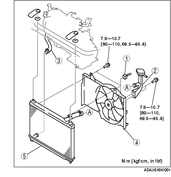

Radiator removal/installation [ZY]
1. Disconnect the negative battery cable.
2. Drain the engine coolant. (See ENGINE COOLANT REPLACEMENT [ZY].)
3. Remove the coolant reservoir tank.
4. Disconnect the oil cooler hose. (ATX)
5. Disconnect the upper radiator hose from the radiator cap component.
6. Remove in the order indicated in the table.

7. Install in the reverse order of removal.
8. Add the engine coolant. (See ENGINE COOLANT REPLACEMENT [ZY].)
9. Inspect the system for engine coolant leakage. (See ENGINE COOLANT LEAKAGE INSPECTION [ZY].)